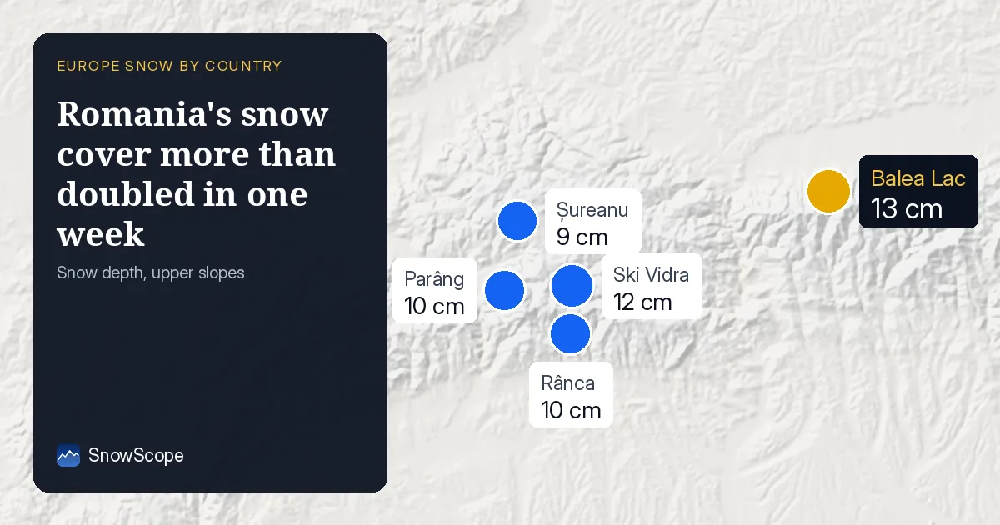

Romania's snow cover more than doubled in one week
Romania's white mountains have grown fast. In just one week, snow cover nearly tripled from 1,910 km² to 4,000 km², a jump of 2,090 km² that marks the start of the season across the high ridges.
See the live snow forecast for Balea Lac in the SnowScope appSnow depth, powder alerts and the 3D map, free.
Balea Lac leads, but the whole country is turning white
Balea Lac holds the deepest measured snow on the ground right now: 13 cm (measured at the station on 20 November). It sits at 2,032 m in the Fagaras range, where cold air settles first. Ski Vidra in the same chain shows 12 cm, also benefiting from height and position. Lower resorts like Rânca, at 1,703 m, lag behind with 10 cm.
What matters more is the speed of change. Last week at this time, snow covered only 1,910 km² of Romania's mountains. Today it covers 4,000 km², more than double. That shift tells us winter has arrived not just at a few peaks, but across the entire high country.
| Day | White area | Most new snow in 3 days | Deepest resort |
|---|---|---|---|
| Monday 16 November | 6,630 km² | 8 cm | Borsec |
| Tuesday 17 November | 7,710 km² | 5 cm | Havas Bucsin |
| Wednesday 18 November | 3,650 km² | 6 cm | Ski Vidra |
| Thursday 19 November | 2,530 km² | 4 cm | Balea Lac |
| Friday 20 November | 4,000 km² | 7 cm | Balea Lac |

The trend: a week of rapid gain
Seven days ago, snow was scarce. The Retezat, Rodna and Parâng ranges held snow only on their highest slopes. By 16 November, cover had spread to 6,630 km². Then came a thaw midweek—by 18 November, the white area shrank to 3,650 km²—but new snow falling since then has rebuilt it to 4,000 km² as of today.
The pattern shows how volatile early season can be. Snow falls, warmer air melts it back, then the next storm arrives. This is why early-season depths are thin and can disappear fast. At Balea Lac, only 13 cm lies on the ground despite 5 cm arriving in the past 72 hours. Rocks can still be close beneath.

Where snow is deepest: above 2,000 m
Our snow model shows clear bands by height. Below 1,500 m, almost no snow remains on the ground. Between 1,500 and 2,000 m, cover is thin and patchy: mean depth of 3 cm, with snow on 78 percent of the land. Above 2,000 m, the picture improves sharply. Snow lies deep enough to ski: mean depth of 14 cm across the zone above 2,000 m, and snow cover is complete at 100 percent.
Three hotspots stand out in the mountains
Three ranges have caught the most snow in the past 72 hours. The Retezat, in the southern Carpathians, leads with 51 cm of new snow modelled over that period. The Rodna Mountains, in the north, show 26 cm. The Parâng, also in the south, hold 17 cm. These are model estimates for areas, not point measurements, so local totals will vary. All three have risen above the snow line, which currently sits at 1,500 m.
What the next three days will bring
More snow is coming. Our model forecasts up to 21 cm across the mountains over the next three days, with 20 November being the peak, bringing 14 cm. By then, resorts should deepen. Balea Lac and Ski Vidra are forecast to gain 14 cm each; Șureanu, the southern resort, may see 18 cm. Even lower sites like Rânca will gain 11 cm. The snow line will stay high or rise slightly, so only the upper slopes will fill.
Beyond the next week
Over the following four days (24 to 27 November), our model suggests a further 24 cm is possible, though this forecast is less certain and may change. No snow is falling to the south in Bulgaria, where only 2 cm now rests on its best peaks. Ukraine, to the east, shows 6 percent snow cover and is forecast similar totals to Romania. For now, Romania's mountains are the focus of winter activity in the region.
Only 13 out of 52 resorts currently have snow on the ground, so conditions are early-season and scattered. Early-season snow is often thin and unstable as it settles. Consult the official avalanche bulletin if you plan to leave marked runs. SnowScope's map shows the latest depth and coverage zone by zone.
Tips for skiers
- Stick to resorts above 1,900 m for the most reliable cover. Balea Lac and Ski Vidra are your best bet today; expect 13-12 cm and thin patches below.
- Watch for rocks and ice. Early-season snow is fragile and can melt or compress quickly. What is skiable today may change within days.
- Head high after 23 November when fresh snow peaks. The upper bands (above 2,000 m) will be fullest once the new snow settles.
- In the next week, the Retezat will likely hold the most snow. If you explore the backcountry, check the official avalanche forecast for the region.
- Expect weather swings. Cold snaps build snow; warm spells thin it. Early season requires flexibility and constant checking.
About these numbers
Resort snow depths are the deepest snow on the resort's upper slopes from the SnowScope snow model (about 1 km, run of 20 November); they are estimates for an area, not a measurement at one point. Station values are measurements on the date shown. Forecasts can change. Always read the official avalanche bulletin before going off-piste.
Cite this report
For research, teaching or the press: the numbers and charts are free to reuse under CC BY 4.0 with this citation.
SnowScope (2026), Romania's snow cover more than doubled in one week, https://snowscope.app/blog/en/2026/11/romania-snow-cover-gain-this-week-20-november-2026.html, accessed 2026-11-20
SnowScope (Atlas Labs). (2026, November 20). Romania's snow cover more than doubled in one week. SnowScope snow reports. https://snowscope.app/blog/en/2026/11/romania-snow-cover-gain-this-week-20-november-2026.html
BibTeX
@misc{snowscope2026romaniasnowcovergainthis,
author = {{SnowScope (Atlas Labs)}},
title = {Romania's snow cover more than doubled in one week},
year = {2026},
month = nov,
howpublished = {\url{https://snowscope.app/blog/en/2026/11/romania-snow-cover-gain-this-week-20-november-2026.html}},
note = {Published 2026-11-21 12:51 UTC; accessed 2026-11-20}
}· CC BY 4.0 · Methods, data and tools →
Balea Lac: snow and temperature by height, this winter vs last (tools) →
Follow Balea Lac
Free: a message when fresh snow is coming, and the forecast every morning.
More snow reports

From 13 to 19 November 2026 Slovenia got the most snow and kept it; Serbia and Croatia had a deep but short white weekend; Montenegro only on Durmitor; Bulgaria almost none. The ranking, with links to each country report.

Savin Kuk above Žabljak picked up 22 cm of snow from 13 to 19 November and still has 6 cm today. Kolašin 1450 and 1600 are bare. The week day by day, and the next chances.

Pick a region, dates, budget and what matters; get every resort ranked with the likely snow at the start, the pass, hotel and food per person, chalets to book, and a game mode.